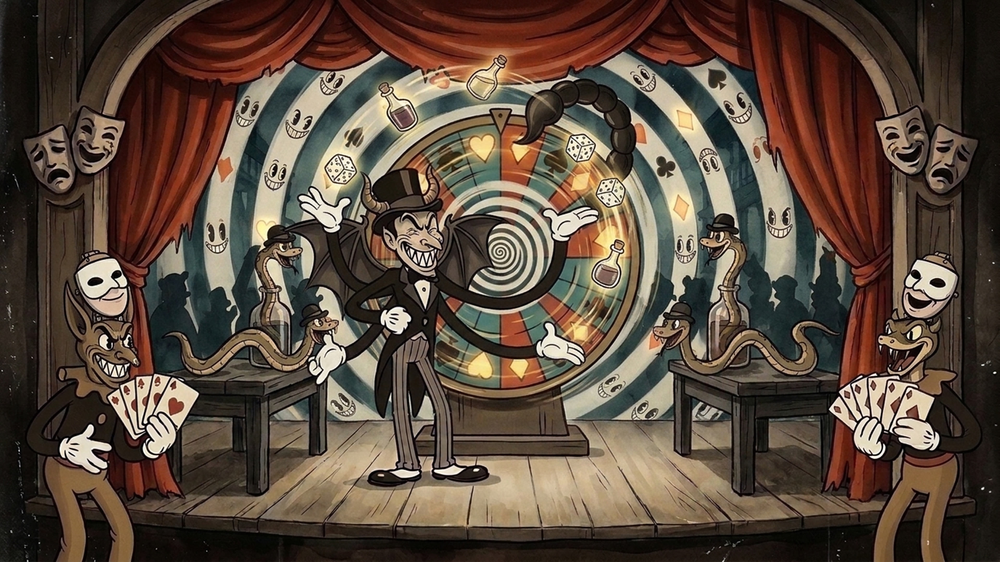
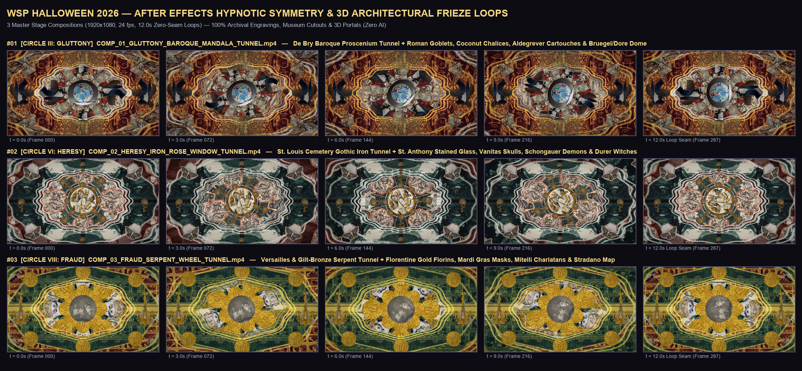

Videometry Visuals LLC • Dustin Klein • Complete Additive Client Review Gallery (Updated Oct 27, 2026 — All Original Work Preserved + New Suites Added)
Curated for Paul Hoffman, Valentine Cranford, and Andrew Smith (Pulse Lighting). 100% Additive Gallery (Zero Old Work Removed): Includes the 1930s Max Fleischer 'Swing You Sinners' Dark New Orleans Jazz-Age Animation Suite (7 Reels + 8 Frames), the Oct 27 1970s Rock Poster Silkscreen & Linocut Remakes + Unfiltered Drift-Trimmed Cuts (12 Reels + 8 Frames), the 3 New 8-Stage Flat-Printmaking Scenic Panorama Suites (7 Reels + 10 Sheets), all 4 After Effects 2026 Non-AI & Hybrid Stagecraft Suites (16 Loops + 4 .AEP Projects), the Cosmic Geometry & Ophanim Vortex Suite (8 Reels), PLUS all 55 Original V1 Bespoke Main Reels & 36 Native 4K UHD Style Frames and 13 Archival/Carving Extras.
105 Main Loops + 13 Extras
All 55 V1 Originals Preserved + 50 New Fleischer / Linocut / Scenic / AE / Vortex Reels
1930s Fleischer & 1970s Print
18/18 PASS Rubber-Hose Jazz Cel Loops + 18/18 PASS Silkscreen/Linocut Remakes
📂 MASTER FILE DIRECTORY & DIRECT DOWNLOAD INDEX (105 MAIN REELS + 74 FRAMES/SHEETS + 13 EXTRAS)
Browse the complete folder hierarchy below, preview any video or 4K style frame in the pop-up player, download individual files, or grab the entire organized repository.
★ NEW SHOWSTOPPER SUITE: 1930s MAX FLEISCHER 'SWING YOU SINNERS' DARK NEW ORLEANS JAZZ-AGE ANIMATION (ALL 3 CIRCLES) — 7 Video Loops + 8 Style Frames/Sheets
#
Type
Title & Visual Progression
Relative File Path
Size
Actions
#01
★ TOP PICK • 720p @ 24 fps
[1930s Max Fleischer Gluttony] The Midnight Gumbo & Sousaphone Maw at Café Cerberus — 6-Stage Loop (1X Master)
Rubber-hose skeleton horn players (sousaphone & slide trombone), 3-headed cartoon Cerberus in a cast-iron gumbo pot, and 4 white-gloved dancing crawfish in a brick French Quarter jazz café.
[1930s Max Fleischer Heresy] St. Louis Cemetery Second-Line & The Voodoo Snake Queen — 6-Stage Loop (1X Master)
Bowler-hatted rubber-hose skeletons jamming on piano-key Canto X sepulchres, swaying pillar cobras, and the Voodoo Snake Queen unfurling her Medusa viper crown under a grinning pie-eyed crescent moon.
[1930s Max Fleischer Fraud] Dr. Geryon's Medicine Show & The Loaded Roulette Wheel — 6-Stage Loop (1X Master)
Dapper rubber-hose carnival croupier Dr. Geryon whose polite face hinges open like a cabinet door to reveal a horned demon while bowler-hatted vipers uncork from snake-oil bottles and roll dice.
[1930s Max Fleischer Anthology] Complete 3-Circle 'Swing You Sinners' Jazz-Age Inferno Master Reel (Gluttony + Heresy + Fraud)
Continuous 2.3-minute hard-cut concert anthology uniting all 18 transitions across Café Cerberus, St. Louis Cemetery Second-Line, and Dr. Geryon's Medicine Show.
1930s Max Fleischer 'Swing You Sinners' Suite — Assembled Master Loops Proof Sheet
1930s FLEISCHER SUITE • VIDEO PROOF SHEET — Stage-by-stage video frames from the assembled Gluttony, Heresy, and Fraud 1930s Fleischer loops (18/18 PASS, 96.4% avg seam).
All 18 Max Fleischer 1930s Ink & Watercolor Keyframes Contact Sheet (3 Circles × 6 Stages)
1930s FLEISCHER SUITE • 18 KEYFRAMES SHEET — Complete 3×6 architectural progression across Café Cerberus (Gluttony), St. Louis Cemetery (Heresy), and Dr. Geryon's Midway (Fraud).
Ground-up 1970s rock-poster silkscreen & carved linocut remake: every banquet item is locked on the table from Stage 1 and transforms in place into the devouring linocut maw & fractal rot rosette.
[V2 Unfiltered Drift-Trimmed] Hall of the Beignet Eyes — 12-Step Surreal Ocular Loop
100% unfiltered original pixels with clean hard-cut trims excising white-flash plate cross-fade (02_to_03), floating 2D square frame (04_to_05), and green bush pop-in (10_to_11).
1970s SILKSCREEN REMAKES • VIDEO PROOF SHEET — Stage-by-stage video frames from the assembled Terminal Gluttony, Rite of Indulgence, and Serpent Saint loops (18/18 PASS).
1970s SILKSCREEN REMAKES • 18 KEYFRAMES SHEET — Complete 3×6 architectural progression across Terminal Gluttony, The Rite of Indulgence, and The Serpent Saint.
TIER III • CANTO VI CLIMAX (3840×2160) — Dante's Cerberus reimagined as a three-headed armored bayou alligator erupting from a flooded New Orleans courtyard.
TIER II • SANCTUARY NAVE (3840×2160) — Towering New Orleans Gothic cathedral nave with a glowing stained-glass serpent rose window and open grimoire altar.
TIER III • CANTO X COSMIC VORTEX (3840×2160) — Counter-rotating concentric rings of engraved serpents and burning stone tombs descending into Circle VI.
★ NEW SHOWSTOPPER SUITE: 1930s MAX FLEISCHER 'SWING YOU SINNERS' DARK NEW ORLEANS JAZZ-AGE ANIMATION (ALL 3 CIRCLES)
Authentic 1930–1933 Max Fleischer Studios ('Swing You Sinners!', 'Minnie the Moocher', 'Bimbo's Initiation') hand-inked dip-pen & brush-on-celluloid rubber-hose cartoon animation over dark New Orleans watercolor & charcoal wash backgrounds in Two-Strip Cinecolor / early Technicolor. Covers all 3 assigned Circles with 100% locked outer architecture and zero items appearing out of thin air: (1) Circle III Gluttony — 'The Midnight Gumbo & Sousaphone Maw at Café Cerberus' (96.3% seam); (2) Circle VI Heresy — 'St. Louis Cemetery Second-Line & The Voodoo Snake Queen' (96.4% seam); (3) Circle VIII Fraud — 'Dr. Geryon's Medicine Show & The Loaded Roulette Wheel' (96.4% seam).
[1930s Max Fleischer Gluttony] The Midnight Gumbo & Sousaphone Maw at Café Cerberus — 6-Stage Loop (1X Master)
Rubber-hose skeleton horn players (sousaphone & slide trombone), 3-headed cartoon Cerberus in a cast-iron gumbo pot, and 4 white-gloved dancing crawfish in a brick French Quarter jazz café.
UNO ARENA V3 9:4 TOP CROP MARGIN (10%)
UNO ARENA V3 9:4 BOTTOM CROP MARGIN (10%)
★ 1930s FLEISCHER CEL ANIMATION • CIRCLE VI HERESY • 6/6 PASS (96.4% SEAM) • 45.8s
[1930s Max Fleischer Heresy] St. Louis Cemetery Second-Line & The Voodoo Snake Queen — 6-Stage Loop (1X Master)
Bowler-hatted rubber-hose skeletons jamming on piano-key Canto X sepulchres, swaying pillar cobras, and the Voodoo Snake Queen unfurling her Medusa viper crown under a grinning pie-eyed crescent moon.
UNO ARENA V3 9:4 TOP CROP MARGIN (10%)
UNO ARENA V3 9:4 BOTTOM CROP MARGIN (10%)
★ 1930s FLEISCHER CEL ANIMATION • CIRCLE VIII FRAUD • 6/6 PASS (96.4% SEAM) • 45.7s
[1930s Max Fleischer Fraud] Dr. Geryon's Medicine Show & The Loaded Roulette Wheel — 6-Stage Loop (1X Master)
Dapper rubber-hose carnival croupier Dr. Geryon whose polite face hinges open like a cabinet door to reveal a horned demon while bowler-hatted vipers uncork from snake-oil bottles and roll dice.
[1930s Max Fleischer Anthology] Complete 3-Circle 'Swing You Sinners' Jazz-Age Inferno Master Reel (Gluttony + Heresy + Fraud)
Continuous 2.3-minute hard-cut concert anthology uniting all 18 transitions across Café Cerberus, St. Louis Cemetery Second-Line, and Dr. Geryon's Medicine Show.
[1930s Max Fleischer Fraud] Dr. Geryon's Medicine Show & Loaded Roulette Wheel — 2X Concert Backdrop Loop
Extended 91.3-second continuous arena backdrop loop of the 1930s Fleischer carnival medicine show.
UNO ARENA V3 9:4 TOP CROP MARGIN (10%)
UNO ARENA V3 9:4 BOTTOM CROP MARGIN (10%)
★ NEW OCT 27 UPDATE: 1970s ROCK POSTER SILKSCREEN & CARVED LINOCUT REMAKES + UNFILTERED DRIFT-TRIMMED CUTS (ANDREW SMITH NOTES)
Direct response to Andrew Smith's Oct 27 review notes (preserving all V1 originals below): (1) 'Terminal Gluttony', 'The Rite of Indulgence', and 'The Serpent Saint' have been completely remade from the ground up as 6-stage locked-architecture loops in an authentic 1970s Rock Poster Silkscreen & Carved Linocut Print aesthetic with Ben-Day halftone dots, gouged black relief lines, flat spot-color inks, zero AI/CGI surfaces, and zero items popping in out of thin air (18/18 PASS, 95.6% avg seam in VV Flow Long Loop Assembler); (2) All remaining Gluttony Master Sagas have been cleanly trimmed of mid-clip AI temporal drift/fade-outs using 100% unfiltered hard cuts.
Ground-up 1970s rock-poster silkscreen & carved linocut remake: every banquet item is locked on the table from Stage 1 and transforms in place into the devouring linocut maw & fractal rot rosette.
[V2 Unfiltered Drift-Trimmed] Hall of the Beignet Eyes — 12-Step Surreal Ocular Loop
100% unfiltered original pixels with clean hard-cut trims excising white-flash plate cross-fade (02_to_03), floating 2D square frame (04_to_05), and green bush pop-in (10_to_11).
[V2 Unfiltered Drift-Trimmed] The King Cake Parade — 11-Step Flooded Quarter Float Loop
100% unfiltered original pixels with clean hard-cut trims excising 3D balcony blur, pink-sky cross-fade, jester pop-in starburst fade & floating 3D cubes.
UNO ARENA V3 9:4 TOP CROP MARGIN (10%)
UNO ARENA V3 9:4 BOTTOM CROP MARGIN (10%)
★ NEW OCT 27 SUITE: 8-STAGE FLAT-PRINTMAKING SCENIC PANORAMAS — WOODBLOCK, STAINED GLASS & PAPER THEATER
Pure 2D traditional printmaking & theatrical stagecraft panoramas across all three Circles (zero 3D CGI, zero volumetric fog, 100% locked outer architecture): (1) Circle III Gluttony — 19th-Century Ivan Bilibin Hand-Tinted Woodblock & Pochoir French Quarter Courtyard Banquet → Bayou Cerberus (8 stages); (2) Circle VI Heresy — Medieval Woodcut & Gothic Leaded Stained-Glass St. Louis Necropolis → Canto X Serpent Oracle (8 stages); (3) Circle VIII Fraud — 1880s B. P. Grimaud 5-Color French Stencil & Victorian Paper Toy-Theater Masquerade → Geryon (8 stages).
CIRCLE III: GLUTTONY — "THE 12-STEP MASTER SAGAS, BOURBON STREET BANQUET & FEAST OF BACCHUS" (ORIGINAL V1 SUITE)
100% bespoke, cohesive New Orleans × Inferno visual worlds: features all 7 full-length 10-to-12-step Gluttony Master Loops (Original V1 cuts preserved alongside the Oct 27 V2 Remediated cuts above) plus all 8 Bourbon Street Banquet, Bacchus & Food Cathedral loops.
15 Bespoke 720p @ 24 fps Hard-Cut Loops (7 Full 10–12 Step Master Loops + All 8 Bourbon Banquet Suite Reels) + 6 4K Style Frames
Complete 3.8-minute hard-cut marathon of all 6 Snake Woman Heresy sequences
UNO ARENA V3 9:4 TOP CROP MARGIN (10%)
UNO ARENA V3 9:4 BOTTOM CROP MARGIN (10%)
CIRCLE VIII: FRAUD — "THE SNAKE OIL MEDICINE SHOW, VOODOO APOTHECARY & CARNIVAL OF DECEPTION"
100% bespoke New Orleans Carnival of Deception suite: French Quarter Snake Oil medicine show pitchmen multiplying into clones, Voodoo apothecary jars of trapped souls, Geryon's Mardi Gras mask-under-mask scorpion transformation, rigged riverboat casinos, and false prophetess mirror halls.
100% bespoke New Orleans esoteric crossroads & ritual portal suite bridging all three circles: Papa Legba's Kongo Cosmogram cemetery portal, the Ouroboros Seal of Gluttony, the Damballah Stained-Glass Rosette of Heresy, the Masonic Eye Seal of Fraud, and Baron Samedi's Nine Circles Attic Grimoire.
100% text-free antique Visconti gold-leaf and 2D woodcut Tarot cards that awaken, break apart into multi-plane 2D paper-cutout worlds across Gluttony, Heresy, Fraud, and Cocytus, and fold seamlessly back into pristine cards.
Grand Dante's Infernal Tarot Anthology (All 30 Clips)
Complete 3.8-minute hard-cut marathon of the Cursed New Orleans Tarot Deck in 2D woodcut & paper-cutout
UNO ARENA V3 9:4 TOP CROP MARGIN (10%)
UNO ARENA V3 9:4 BOTTOM CROP MARGIN (10%)
19TH-CENTURY FRENCH COURT & TRANSFORMATION PLAYING CARDS — "B. P. GRIMAUD c. 1880 & EARLY-1800s PARIS PATTERN"
100% authentic 5-color flat stencil French playing cards (B. P. Grimaud c. 1880 Royal Court & Early-1800s Transformation Pip Cards) with zero full words: King of Hearts (Gluttony), Queen of Spades (Heresy), Jack of Diamonds (Fraud), Royal Court Trio, and 7-Pip Transformation Cards.
High-precision sacred geometry, cymatic lotus mandalas, multi-axis Ophanim wheels, and Fibonacci pineal torus vortex loops designed for transcendent concert jam peaks and cosmic transitions.
All 8 Bespoke 720p @ 24 fps Hard-Cut Loops (30/30 PASS in VV Flow Long Loop Assembler) + 6 Native 4K UHD Style Frames
All original supplemental B-roll studies preserved, plus the complete Pure Carvings & Engravings loops and Archival Proscenium suites for Gluttony, Heresy & Fraud.
Complete Supplemental B-Roll & Archival Composite Library (All Original Extras Preserved + Full Carvings & Archival Suites)
Isolated foreground totem loop on pure #000000 black for live VJ luma-key layering
UNO ARENA V3 9:4 TOP CROP MARGIN (10%)
UNO ARENA V3 9:4 BOTTOM CROP MARGIN (10%)
★ NEW SHOWSTOPPER SUITE: 1930s MAX FLEISCHER 'SWING YOU SINNERS' DARK NEW ORLEANS JAZZ-AGE ANIMATION (ALL 3 CIRCLES) — STYLE FRAMES, CONTACT SHEETS & 4K UHD MASTERS
Click any style frame or contact sheet to inspect at full resolution. Toggle the 9:4 UNO Arena LED Wall Safe-Zone guide above to verify center-safe framing.
Dr. Geryon's Medicine Show — Stage 04 Peak 'Bimbo's Initiation' Malebolge Jackpot
Native 4K UHD peak carnival double-cross with hypnotic pie-eyed spiral, 4-armed bat-winged Geryon, and dice-rolling bottle vipers.

UNO ARENA V3 9:4 TOP CROP MARGIN (10%)
UNO ARENA V3 9:4 BOTTOM CROP MARGIN (10%)
★ NEW OCT 27 UPDATE: 1970s ROCK POSTER SILKSCREEN & CARVED LINOCUT REMAKES + UNFILTERED DRIFT-TRIMMED CUTS (ANDREW SMITH NOTES) — STYLE FRAMES, CONTACT SHEETS & 4K UHD MASTERS
Click any style frame or contact sheet to inspect at full resolution. Toggle the 9:4 UNO Arena LED Wall Safe-Zone guide above to verify center-safe framing.
★ NEW OCT 27 SUITE: 8-STAGE FLAT-PRINTMAKING SCENIC PANORAMAS — WOODBLOCK, STAINED GLASS & PAPER THEATER — STYLE FRAMES, CONTACT SHEETS & 4K UHD MASTERS
Click any style frame or contact sheet to inspect at full resolution. Toggle the 9:4 UNO Arena LED Wall Safe-Zone guide above to verify center-safe framing.
Click any style frame or contact sheet to inspect at full resolution. Toggle the 9:4 UNO Arena LED Wall Safe-Zone guide above to verify center-safe framing.
Direction 4: Hypnotic Concert Symmetry & 3D Frieze Tunnels — Renders Proof Sheet
Counter-rotating baroque mandalas and 3D architectural frieze tunnels for arena LED walls.

UNO ARENA V3 9:4 TOP CROP MARGIN (10%)
UNO ARENA V3 9:4 BOTTOM CROP MARGIN (10%)
CIRCLE III: GLUTTONY — "THE 12-STEP MASTER SAGAS, BOURBON STREET BANQUET & FEAST OF BACCHUS" (ORIGINAL V1 SUITE) — STYLE FRAMES, CONTACT SHEETS & 4K UHD MASTERS
Click any style frame or contact sheet to inspect at full resolution. Toggle the 9:4 UNO Arena LED Wall Safe-Zone guide above to verify center-safe framing.
Dante's Cerberus reimagined as a three-headed armored bayou alligator erupting from a flooded New Orleans courtyard.
UNO ARENA V3 9:4 TOP CROP MARGIN (10%)
UNO ARENA V3 9:4 BOTTOM CROP MARGIN (10%)
CIRCLE VI: HERESY — "THE SNAKE WOMAN, SERPENT SAINT & CATHEDRAL OF FORBIDDEN KNOWLEDGE" (ORIGINAL V1 SUITE) — STYLE FRAMES, CONTACT SHEETS & 4K UHD MASTERS
Click any style frame or contact sheet to inspect at full resolution. Toggle the 9:4 UNO Arena LED Wall Safe-Zone guide above to verify center-safe framing.
Cracked plaster devotional icon weeping crimson and molten gold in a candlelit cypress chapel.
UNO ARENA V3 9:4 TOP CROP MARGIN (10%)
UNO ARENA V3 9:4 BOTTOM CROP MARGIN (10%)
CIRCLE VIII: FRAUD — "THE SNAKE OIL MEDICINE SHOW, VOODOO APOTHECARY & CARNIVAL OF DECEPTION" — STYLE FRAMES, CONTACT SHEETS & 4K UHD MASTERS
Click any style frame or contact sheet to inspect at full resolution. Toggle the 9:4 UNO Arena LED Wall Safe-Zone guide above to verify center-safe framing.
Click any style frame or contact sheet to inspect at full resolution. Toggle the 9:4 UNO Arena LED Wall Safe-Zone guide above to verify center-safe framing.
Click any style frame or contact sheet to inspect at full resolution. Toggle the 9:4 UNO Arena LED Wall Safe-Zone guide above to verify center-safe framing.
Death, Three-Faced Lucifer in Cocytus & Judgement Triptych
Monumental climax Tarot triptych in antique woodcut ink and embossed gold leaf.
UNO ARENA V3 9:4 TOP CROP MARGIN (10%)
UNO ARENA V3 9:4 BOTTOM CROP MARGIN (10%)
19TH-CENTURY FRENCH COURT & TRANSFORMATION PLAYING CARDS — "B. P. GRIMAUD c. 1880 & EARLY-1800s PARIS PATTERN" — STYLE FRAMES, CONTACT SHEETS & 4K UHD MASTERS
Click any style frame or contact sheet to inspect at full resolution. Toggle the 9:4 UNO Arena LED Wall Safe-Zone guide above to verify center-safe framing.
Click any style frame or contact sheet to inspect at full resolution. Toggle the 9:4 UNO Arena LED Wall Safe-Zone guide above to verify center-safe framing.